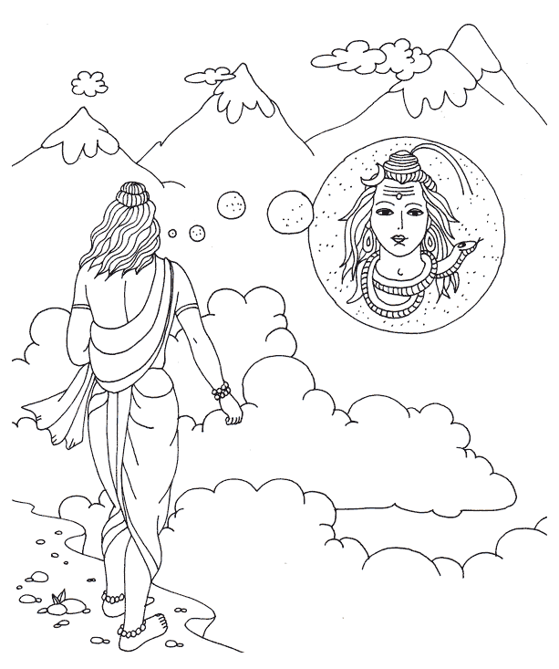
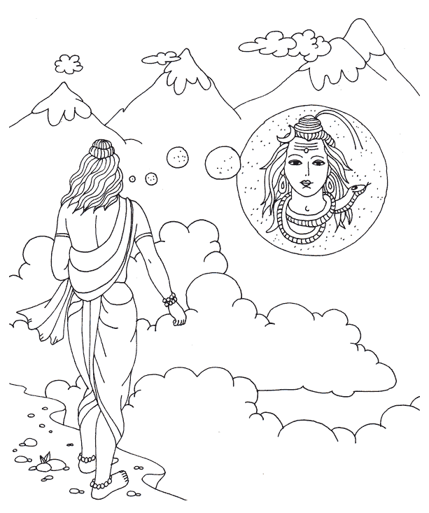

Después de poner a prueba al señor Brahma, Bhrigu Muni fue directamete a la montaña Kailasa, donde reside el Señor Siva, quien es su hermano....
|
 |
Después de poner a prueba al señor Brahma, Bhrigu Muni fue directamete a la montaña Kailasa, donde reside el Señor Siva, quien es su hermano.... |